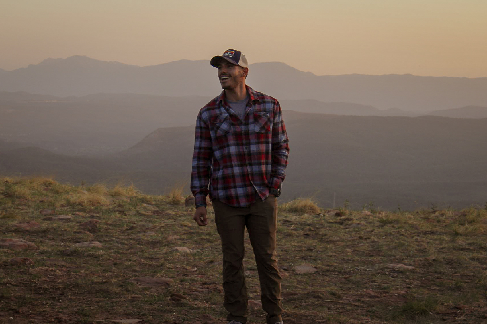

 Hello! My name is Josh Padilla aka J Dilla. I am currently 28 years old and I live in Phoenix, Arizona. I was born and raised in Albuquerque, New Mexico and moved to Arizona to attend college at Northern Arizona University in Flagstaff. After college I moved to Phoenix to start my real-world adult life. For the most part over the last 5 years of living in Phoenix I've worked as a personal trainer. But I've also worked as an assistant manager/server/bartender at an italian restaurant, and I also currently work as a physical therapy technician. Now I'm pursuing a new career path and have embarked on a journey to become a full-stack web developer. I'm excited for this new chapter in life! It'll be fun to work in a field that has always interested me, but I also have many interests beyond computers and how they work/talk to each other. I'm an avid outdoorsman and outdoor photographer (check out the portfolio link in the navigation drop-down), I'm a die-hard Los Angeles Dodgers fan, and I love traveling. Speaking of travel, one of my coolest life experiences was a big road trip from Phoeniz, Arizona to Seward, Alaska and back. That trip took me to many incredible places and gave me memories that'll last a life time. Aside from those interests and little facts, I have a loving family that I live with comprised of my girlfriend Lauryn and our two dogs Jax and Kenai.
So there's my brief bio, enjoy my page!